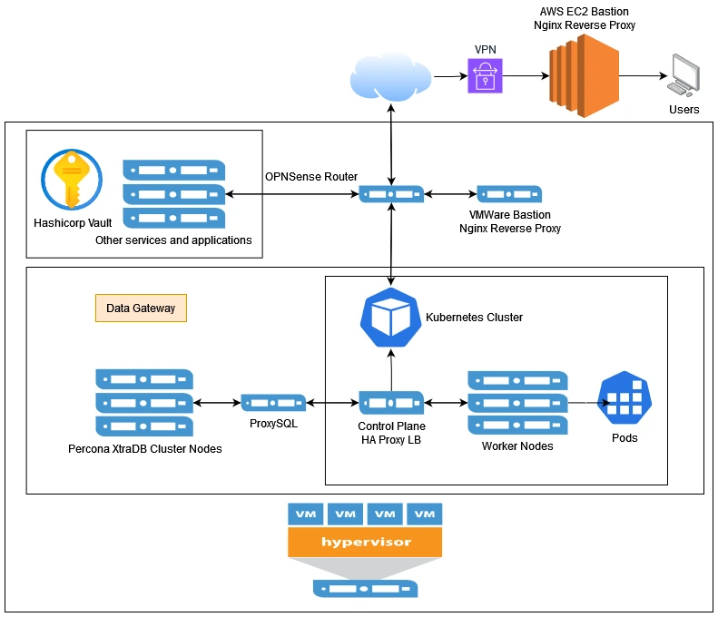

Data Gateway
What is it? Data Gateway is written in Java using the SpringBoot framework, following the SOLID and 12 App Principles, that sits in front of my 3 node multi-master Percona XtraDB cluster and provides a layer of abstraction between the database and the client.
The advantage of this database abstraction layer is that we get "Loose Coupling" which means we don't need to touch other code if we change the underlying database or any other backend changes.
There is also the security advantage as we can bury the database further down the network chain.
Data Gateway is currently deployed in a Kubernetes cluster with 1 control plane and 2 worker nodes with N replicas enabling this app to scale horizontally. It will eventually have full support for stateless sessions with JWTs and have a more secure way of generating and hashing tokens.
How is this application set up and deployed?
Almost automagically because the perpetual free license of VMware ESXi doesn't provide API access for terraform to manage the VMs.
I still need to create the VMs by importing clean image, and then add a static entry in the OPNSense router. After that however...
1. AWS IAM resources are created by Terraform in the main terraform repo, for example in this users.tf
The access and secret keys are stored in Hashicorp Vault for later retrieval.
I am using users and keys as I'm using resources outside of AWS to save on cost. Hybrid cloud baby!
2. The VMs are configured to baseline settings using these Ansible Playbooks, starting with this as the entry point.
3. The multi-master percona xtraDB database cluster is set up using these playbooks.
4. The base Kubernetes cluster is set up using these playbooks.
5. The Kubernetes deployment and service is configured using this playbook.
Upon commit to the master branch, this CICD pipeline is triggered.
1. The pipeline starts by updating the infrastructure state which does stuff like creating the ECR repo
2. The pipeline then compiles the application, builds a container, pushes it to the AWS ECR registry.
3. The pipeline finally deploys the container to the kubernetes cluster using this playbook.
Data Gateway Topography Map

What is this project NOT demonstrating?
My journey into tech, as far as the software engineering side goes, began with dropping out of school to help build a startup, bypassing formal academic training.
As a result, my skills were trained on developing functional and practical, automation scripts for tasks like system setup, health checks, auto recovery, CI/CD processes,
and API interactions rather than focusing on complex, efficient algorithmic challenges or high-performance computing.
The largest dataset I've had to work with was ~300,000 rows of data for a nightly batch job, which was often completed in a few minutes anyway, even when doing a lot of linear searching through the data,
so I never saw the need to optimize further.
However, I've learned in some recent interviews, that leetcode-style challenges are essential for most tech roles, so I'm working on improving my skills in that area.
But today, that is not what's being demonstrated here.
So what IS this project demonstrating?
I am using IAC (Terraform) to manage my infrastructure. I am using Ansible to configure the VMs, set up the Percona XtraDB cluster and Kubernetes cluster.
The playbooks also setups the K8 deployment and services.
I'm using Hashicorp vault to securely store all the API keys, tokens, certificates and passwords.
I have a CICD pipeline that on commit to the master, it runs terraform templates to manage infrastructure states, compile the application, build a container, push it to a registry, and deploy it to the K8 cluster.
I am demonstrating that I am able to build a scalable spring boot application with a robust and secure end to end CICD pipeline to streamline development.